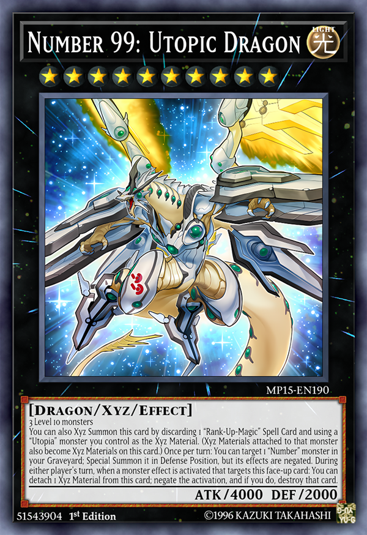
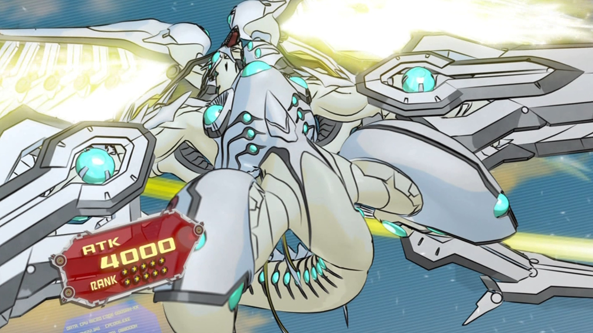
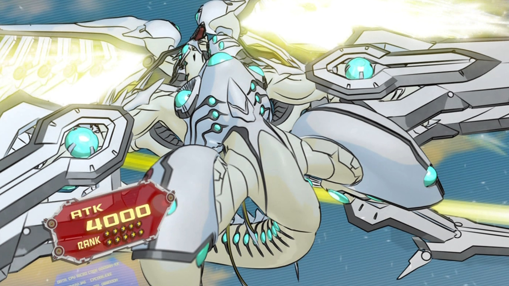

Number 99: Utopic Dragon being summoned for the first time

Number 99: Utopic Dragon being summoned for the first time
Number 99: Utopic Dragon
The second form of Utopia, he debuted in episode 18 of Yu-Gi-Oh! Zexal on August 8th, 2011.Despite his bio saying that you need 3 level 4 light monsters to summon him, you could also summon him only using base Utopia.
He has an effect that allows him to become stronger by 500 attack points more and one monster your opponent controls to become weaker by 1000 attack points less, unfortunaly this can only be activated if you have 1000 or less life points, meaning that this effect is meant to be a saving effect if you're losing.
Utopia Ray started to be used when Yuma and Astral learned to conquer their fears regarding the foes they will meet and the chances of them losing. This is the first evolution of Utopia, showing the progress Yuma and Astral are making on becoming better duelists.
Utopia Ray's design shows him wearing bigger armor with the base colors being grey and black with some gold instead of the white and gold of the last form. While still welding two matching swords, he also gained a huge black and gold sword that his wings use. The green on his chest is moved to his forehead.
Chaos Xyz Change! Right now, show yourself, Chaos Numbers 39: King of Wishes - Hope Ray!
-Yuma and Astral's Japanese summoning chant for Chaos Number 39: Utopia Ray